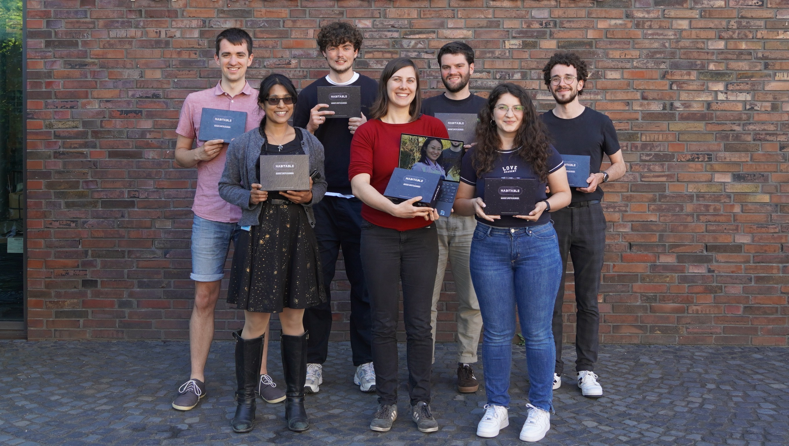

To date, more than 5000 planets have been discovered around other stars in our Universe, called exoplanets. Most exoplanets are unlikely to host life, but a fraction of them are located in a particular region, called the habitable zone, which allows for the presence of liquid water on their surface. So far, we only know of one planet located in the habitable zone of its star which harbors life – our own planet, Earth. However, due to the activity of the human life it hosts, the mean temperature of the Earth and other crucial properties are changing rapidly, causing real danger to the habitability of the Earth. With our project, „habitable“, we aim to explain the concept of the habitability of a planet to the public and to draw attention to the current state of the Earth and to the consequences of our actions. We intend to convey an astronomer’s perspective to the public, in which the Earth is a tiny, precious, and unique planet in the middle of a vast, mostly empty Universe. Our goal is to create a fun cooperative tabletop game which can teach this concept to the public in an engaging and understandable manner.
We are an international team of astrophysicists from undergraduate to postdoc level in the Stellar Evolution Theory group at the Institute for Theoretical Studies (HITS). Our research focuses on all stages of stellar evolution, beginning from the formation of star in giant gas clouds to supernova explosions and black holes. We want to combine our passions for astrophysics, science communication, and the environment in the development of a board game.
© HITS.